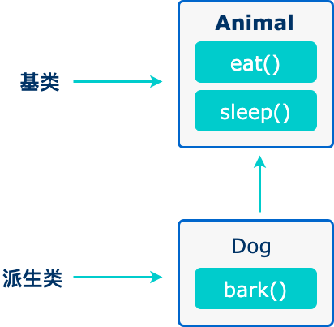
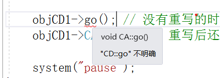
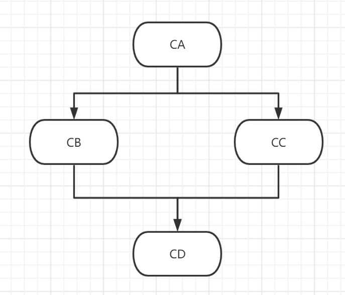

继承
面向对象程序设计中最重要的一个概念是继承。继承允许我们依据另一个类来定义一个类。
当创建一个类时，可以不重新编写新的数据成员和成员函数，只需指定新建的类继承了一个已有的类的成员即可。这个已有的类称为基类，新建的类称为派生类。

// 基类
class Animal {
// eat() 函数
// sleep() 函数
};
//派生类
class Dog : public Animal {
// bark() 函数
};
可以存在多继承
class <派生类名>:<继承方式1><基类名1>,<继承方式2><基类名2>,… { <派生类类体> };
继承中的特点
有 public, protected, private 三种继承方式，它们相应地改变了基类成员的访问属性。【继承方式为最高权限】
- public 继承： 基类 public 成员，protected 成员，private 成员的访问属性在派生类中分别变成：public, protected, private
- protected 继承： 基类 public 成员，protected 成员，private 成员的访问属性在派生类中分别变成：protected, protected, private
- private 继承： 基类 public 成员，protected 成员，private 成员的访问属性在派生类中分别变成：private, private, private
- 如果继承时不显示声明是 private，protected，public 继承，则默认是 private 继承，在 struct 中默认 public 继承
但无论哪种继承方式，上面两点都没有改变：
- private 成员只能被本类成员（类内）和友元访问，不能被派生类访问；【==其实也就是不能被继承==】
- protected 成员可以被派生类访问。【==可以被继承==】
| 访问 | public | protected | private |
|---|---|---|---|
| 同一个类 | yes | yes | yes |
| 派生类 | yes | yes | no |
| 外部的类 | yes | no | no |
一个派生类继承了所有的基类方法，但下列情况除外：
- 基类的构造函数、析构函数和拷贝构造函数。
- 基类的重载运算符。
- 基类的友元函数。
构造函数 & 析构函数在继承中的表现
调用顺序
- 构造函数：先调用基类（父类）的构造函数，后调用派生类（子类）的构造函数。
- 析构函数：先调用派生类（子类）的析造函数，后调用基类（父类）的析造函数。
内部类
先基类 -- 内部类 -- 本类
调用了 CA 的构造函数 CA()
调用了 CN 的构造函数 CN()
调用了 CB 的构造函数 CB()
调用了 CB 的构造函数 ~CB()
调用了 CN 的析造函数 ~CN()
调用了 CA 的析造函数 ~CA()
----------
#include <iostream>
using namespace std;
class CN {
public:
CN(); // 普通构造函数
~CN(); // 析构函数
};
class CA {
public:
CA(); // 普通构造函数
~CA(); // 析构函数
void go();
};
class CB :public CA{
public:
CN objCN;
public:
CB(); // 普通构造函数
~CB(); // 析构函数
void go(); // 重写继承自 CA 的 go() 函数
};
int main() {
// 调用顺序测试
//CB objCB1;
CB * objCB2 = new CB;
//delete objCB2;
objCB2->go(); // 没有重写的时候调用的师傅类的，重写后就是调用自己重写的
objCB2->CA::go(); // 重写后还想调用父类的 go() 函数就需要使用作用域
system("pause");
}
CA::CA(){
cout << "调用了 CA 的构造函数 CA()" << endl;
}
CA::~CA() {
cout << "调用了 CA 的析造函数 ~CA()" << endl;
}
void CA::go() {
cout << "调用了 CA 的成员函数 go()" << endl;
}
CB::CB() {
cout << "调用了 CB 的构造函数 CB()" << endl;
}
CB::~CB() {
cout << "调用了 CB 的构造函数 ~CB()" << endl;
}
void CB::go() {
cout << "调用了 CB 重写的成员函数 go()" << endl;
}
CN::CN() {
cout << "调用了 CN 的构造函数 CN()" << endl;
}
CN::~CN() {
cout << "调用了 CN 的析造函数 ~CN()" << endl;
}
重载和重写
- 重载：类自身的函数重载。
- 重写：类之间的继承，重写同名函数。
- 重写后继续想使用父类的函数可以使用作用域
:: - 子类如果重写了父类的函数，父类的所有重载函数均为失效，只能使用作用域访问。
多继承
调用方法指定，父类有，父类的父类也有~

需要一层一层的逐步调用
- class CA
- class CB :public CA
- class CC :public CA
- class CD :public CB, public CC
菱形继承

- 同一变量有两个值（副本）【二义性问题】 -- 虚基类解决
virtual
#include <iostream>
using namespace std;
class CN {
public:
CN(); // 普通构造函数
~CN(); // 析构函数
};
class CA {
public:
int nAge;
public:
CA(); // 普通构造函数
~CA(); // 析构函数
void go();
void sleep();
};
class CB :public virtual CA{
public:
CB(); // 普通构造函数
~CB(); // 析构函数
void go(); // 重写继承自 CA 的 go() 函数
};
class CC :public virtual CA {
public:
CC(); // 普通构造函数
~CC(); // 析构函数
void go();
void sleep();
};
class CD :public CB, public CC {
public:
CD(); // 普通构造函数
~CD(); // 析构函数
//void go();
};
int main() {
// 调用顺序测试
CD * objCD1 = new CD;
objCD1->CC::go();
objCD1->CB::go(); // 重写后还想调用父类的 go() 函数就需要使用作用域
// objCD1->CA::sleep(); // 这样会出错，提示：错误 C2385 对“CA”的访问不明确
objCD1->CB::CA::sleep(); // 需要一步一步的走,CB 是继承的 sleep() 没有重写
objCD1->CC::sleep();
objCD1->CC::CA::sleep(); // // CC 是继承并重写的 sleep()，也能走到 CA
objCD1->CB::nAge = 10;
//objCD1->CA::nAge = 11; // 这样还会报错
objCD1->CC::nAge = 12; // 同一个变量，存在多个副本，就好像一个人有两个年龄一样，这不合理
// 使用虚基类解决此问题 virtual
// class CB :public virtual CA
// class CC :public virtual CA
// 可以把 virtual 关键字去掉看看效果
cout << objCD1->CB::nAge << endl << objCD1->CC::nAge << endl;
system("pause");
}
CA::CA(){
cout << "调用了 CA 的构造函数 CA()" << endl;
}
CA::~CA() {
cout << "调用了 CA 的析造函数 ~CA()" << endl;
}
void CA::go() {
cout << "调用了 CA 的成员函数 go()" << endl;
}
void CA::sleep() {
cout << "调用了 CA 的成员函数 sleep()" << endl;
}
CB::CB() {
cout << "调用了 CB 的构造函数 CB()" << endl;
}
CB::~CB() {
cout << "调用了 CB 的构造函数 ~CB()" << endl;
}
void CB::go() {
cout << "调用了 CB 重写的成员函数 go()" << endl;
}
CN::CN() {
cout << "调用了 CN 的构造函数 CN()" << endl;
}
CN::~CN() {
cout << "调用了 CN 的析造函数 ~CN()" << endl;
}
CC::CC() {
cout << "调用了 CC 的构造函数 CC()" << endl;
}
CC::~CC() {
cout << "调用了 CC 的析构函数 ~CC()" << endl;
}
void CC::go() {
cout << "调用了 CC 重写的成员函数 go()" << endl;
}
void CC::sleep() {
cout << "调用了 CC 的成员函数 sleep()" << endl;
}
CD::CD() {
cout << "调用了 CD 的构造函数 CD()" << endl;
}
CD::~CD() {
cout << "调用了 CD 的析构函数 ~CD()" << endl;
}
调用了 CA 的构造函数 CA()
调用了 CB 的构造函数 CB()
调用了 CA 的构造函数 CA()
调用了 CC 的构造函数 CC()
调用了 CD 的构造函数 CD()
调用了 CC 重写的成员函数 go()
调用了 CB 重写的成员函数 go()
调用了 CA 的成员函数 sleep()
调用了 CC 的成员函数 sleep()
调用了 CA 的成员函数 sleep()
10
12
请按任意键继续. . .
----------
调用了 CA 的构造函数 CA()
调用了 CB 的构造函数 CB()
调用了 CC 的构造函数 CC()
调用了 CD 的构造函数 CD()
调用了 CC 重写的成员函数 go()
调用了 CB 重写的成员函数 go()
调用了 CA 的成员函数 sleep()
调用了 CC 的成员函数 sleep()
调用了 CA 的成员函数 sleep()
12
12
请按任意键继续. . .